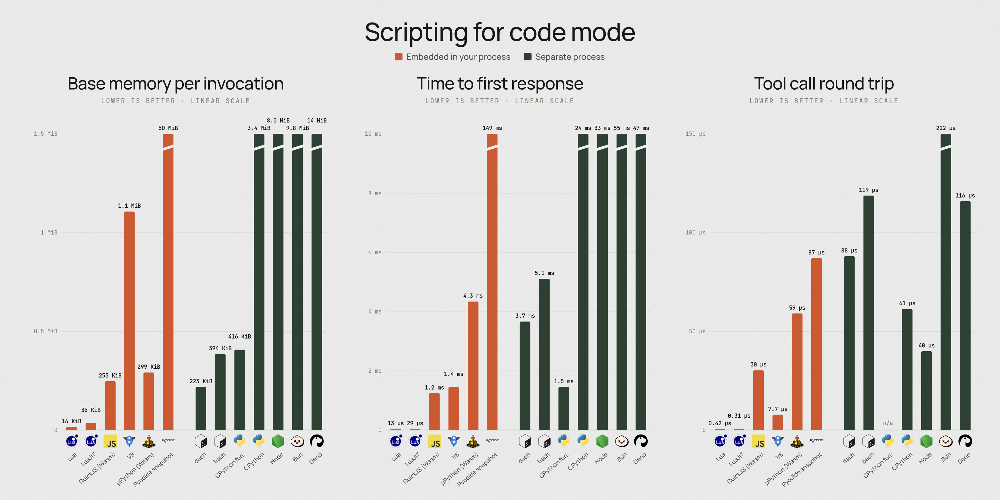
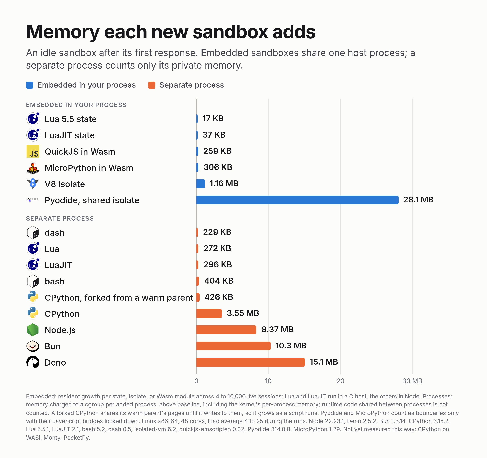
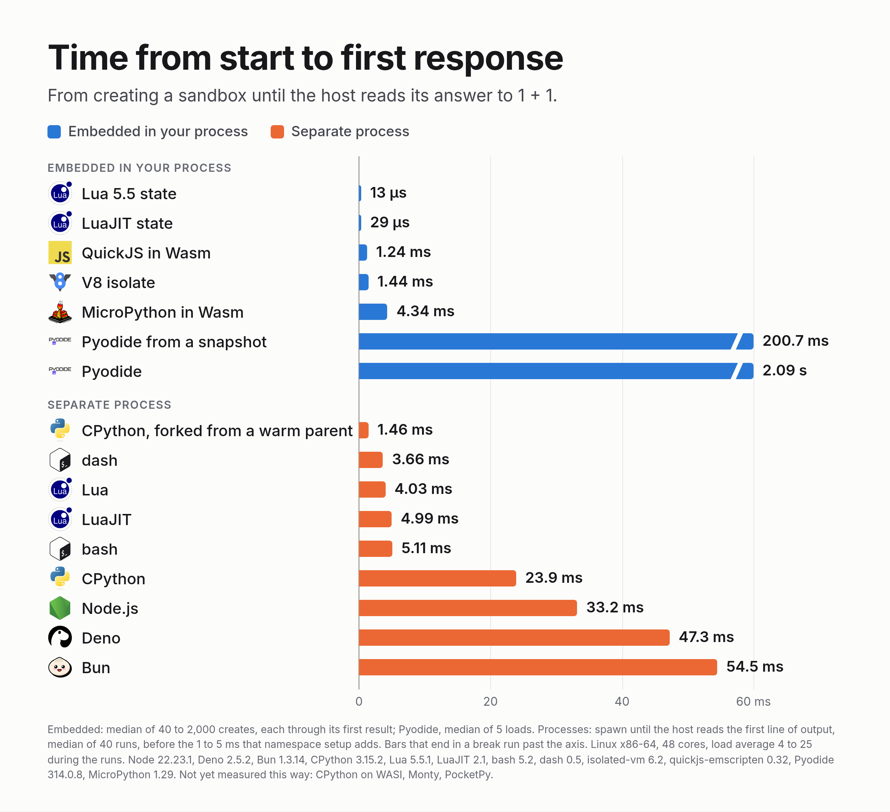
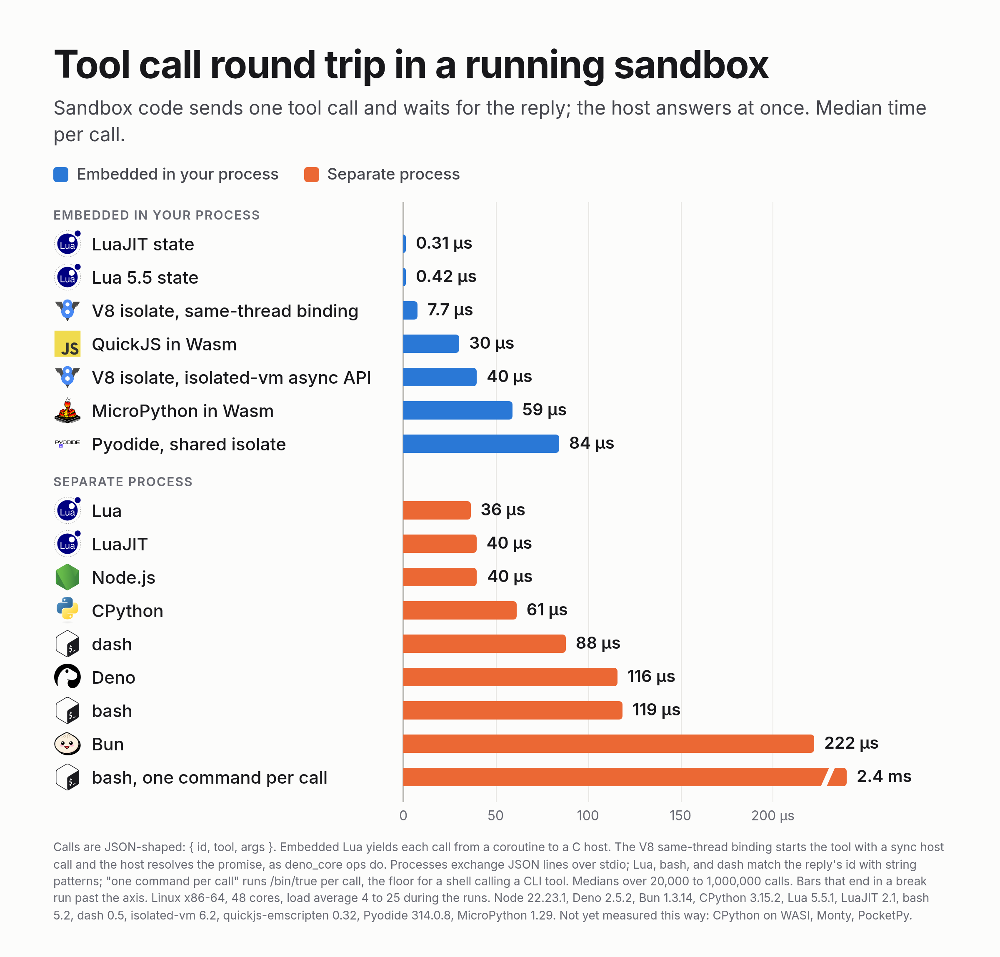
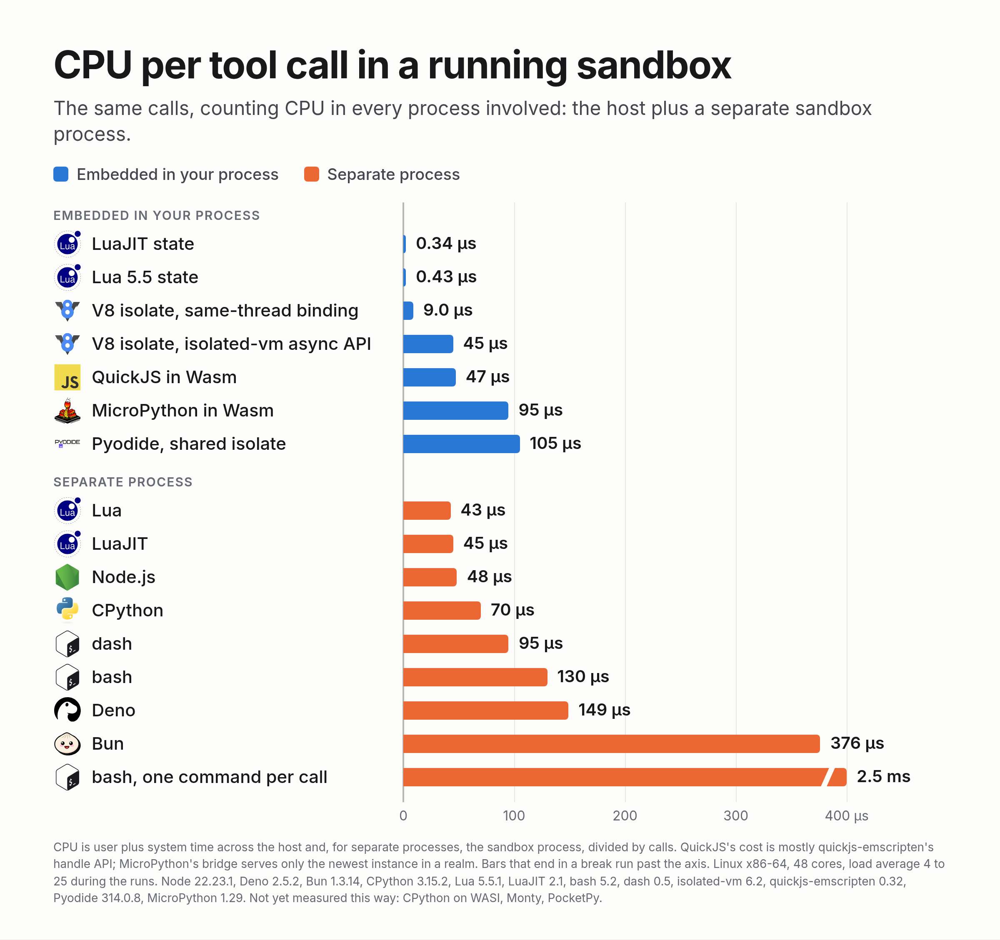

Embedded sandbox charts, every runtime
Drafts with every language and method, to cut down. Each compares scripting runtimes embedded in one host process against the same languages run as separate processes. With all rows they are taller than 4:3; a cut-down set fits 4:3 again.
Definitions: start runs until the host reads the sandbox's answer to 1 + 1; memory is an idle sandbox after that answer; a tool call is an already-running sandbox calling the host, which answers at once.
Source page: charts.html (data in data.json). Probe scripts and raw results: notes/local_bench_scripts/tweet_bench. Full plan: benchmark report.





